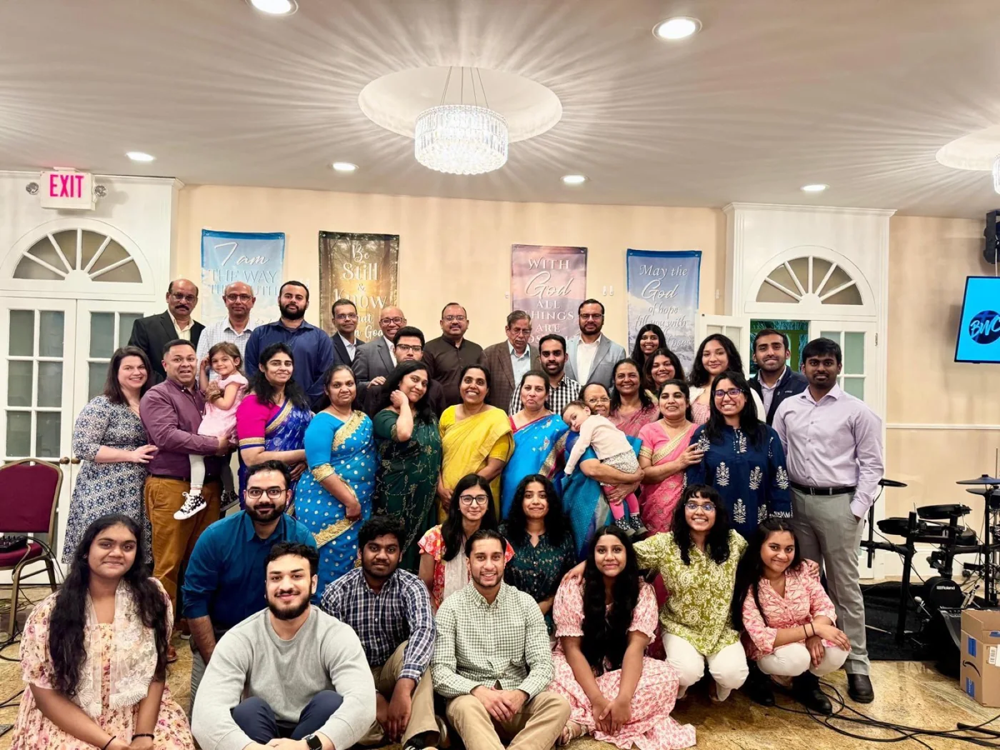

Find us downstairs.
We meet in the lower level of Golden Sword Church at 10 Tanglewylde Avenue. Look for Bethel Worship Center when you arrive.
Open the mapYour first visit
10 Tanglewylde Avenue, Bronxville. You’ll find us on the lower level of Golden Sword Church.

Make yourself at home
We meet in the lower level of Golden Sword Church at 10 Tanglewylde Avenue. Look for Bethel Worship Center when you arrive.
Open the mapExpect singing, prayer, and a message from the Bible. You’re welcome to participate or take it all in as you get comfortable.
Children worship with their families. We don’t currently offer a separate children’s program or nursery.
Street and metered parking are available nearby. Check posted signs when you park, and leave a few extra minutes to find your way in.
Wondering about something?
You don’t have to have everything figured out before you come.
Wear what feels comfortable. There’s no need to buy something special for your first visit.
No. Just come to the service you’d like to attend.
The English service runs from 9:30 to 10:30 AM. The Malayalam service runs from 10:30 AM to 12:30 PM.
Yes. Speak with one of our pastors when you visit, or join our online prayer gatherings during the week.